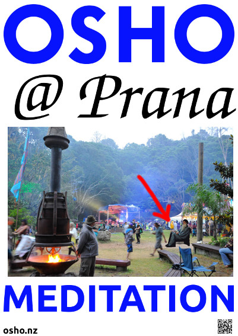

Osho Meditation
Auckland, New Zealand
Yes, I am the beginning of something new, but not the beginning of a new religion. I am the beginning of a new kind of religiousness which knows no adjectives, no boundaries; which knows only freedom of the spirit, silence of your being, growth of your potential; and finally the experience of godliness within yourself - not of a God outside you, but a godliness overflowing from you.
- Osho

OSHO @ Prana
Head over to the Easter Festival at Prana this weekend and enjoy all that is on offer including OSHO Meditations!

OSHO Dynamic Meditation
Challenge yourself to 21 days of OSHO Dynamic Meditation! It is a very powerful active meditation designed to free the modern man of his conditioning. If you are not familiar with it, take a look at the instructions or ask us :)
21 days. 6:30am. 14 April - 4 May. $5 per meditation. @ Youthline, Ponsonby (map).
Wear loose, unrestrictive clothing. You will not need mats or cushions. The entire meditation is done standing. It's best not to eat or drink before the meditation.
Contact
Prem Gyan
022 675 4763
simplegsb@gmail.com
Suryo Jiva
021 241 3355
suryojiva@gmail.com

Love Paints
7pm. Every 3rd Friday per month. $25 including materials. @ St Columba Church, Grey Lynn (map).
It is important to RSVP before the event.
Contact
Sandesh
846 3634
021 0232 4995
sandesh.heinicke@gmail.com